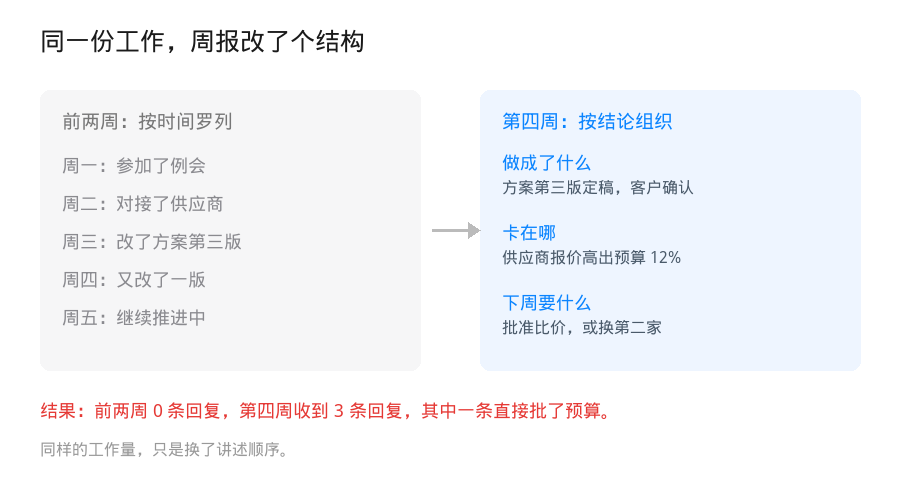

实测记录
做的事：连续 5 周，每周五用 AI 写周报
时间：从 40 分钟压到 12 分钟
真正的变化：前三周白写，第四周才有人回
周报这东西，写了没人看，不写又不行。
我原来每周五下午花四十分钟写它，写完自己都不想读第二遍。
后来我把它交给 AI，速度立刻上来了。
但快了三周，我发现一件更尴尬的事：写得越快，越没人回。

同一份工作，换了个讲法
1
前三周：写得更快，也更没人在意
第一周我是这么用的：把一周干的杂事一股脑倒给它，让它整理成周报。
它整理得特别好。分点、加小标题、语气也专业。我花了十二分钟，交上去一份格式漂亮的周报。
然后没有然后了。没有人回，也没有人问。
第二周一样。第三周我开始觉得不对劲。
问题不在 AI。是我给它的原料就不对。
2
我一直喂它「过程」，没人想看过程
「参加了例会」「对接了供应商」「方案改到第三版」。
这些是过程。过程只说明我很忙，不说明事情有没有往前走。
第四周我换了个做法：不再告诉 AI 我做了什么，而是先自己回答三个问题，再让它组织语言。
这周有什么真正往前推进了？
卡在哪里，需要谁给我一个决定？
下周最重要的那一件事是什么？
3
第四周，第一次有人回我周报
那周的周报只有三块，总共不到四百字。
结果收到三条回复。其中一条，直接把我卡了两周的那个预算给批了。
后来我才想明白：领导不需要知道我很忙，他需要知道我卡在哪、他能替我拍什么板。
这件事跟 AI 一点关系都没有，但 AI 让我有时间去想它。
4
可以直接抄的模板
每周五花十分钟，把下面这段填完，再丢给 AI 润色：
本周推进：[一件具体的事，带上结果，例如「方案第三版定稿，客户确认」]
卡点：[卡在哪，卡了多久，需要谁做什么决定]
下周重点：[只写一件最重要的]
需要支持：[明确的、可执行的一个请求]
——
请把以上内容整理成周报，不超过 400 字。
开头一句总述，下面分「进展 / 卡点 / 下周」三段。
不要用「持续推进」「有序开展」这类词，全部换成具体动作和结果。
最后那句很重要。不写这句，AI 一定会给你一堆漂亮的废话。
「持续推进」四个字，是周报里最没有信息量的词。
5
三个坑
坑一，把过程当成果。「改了三版」不是成果，「第三版定稿」才是。AI 分不清，你得替它分。
坑二，报喜不报忧。只写顺利的部分，周报就变成了邀功信。卡点那一段才是它真正值钱的地方。
坑三，写太长。超过一屏，基本没人读完。四百字是个比较安全的线。
说点实话
AI 确实把写周报的时间从四十分钟压到了十二分钟。
但真正让我这份周报被看见的，不是那二十八分钟。
是我终于想清楚这周到底发生了什么。
写周报变便宜了。
所以「想清楚」变贵了。
我现在的习惯是周五上午先花十分钟回答那三个问题，下午再让 AI 润色。
顺序反了，这活儿就白干。
关注后回复「周报」，拿这份三段模板、上面那段提示词，还有一张我用了五周的周报自检清单。
文中为本人实测，工作场景不同结果会有差异。